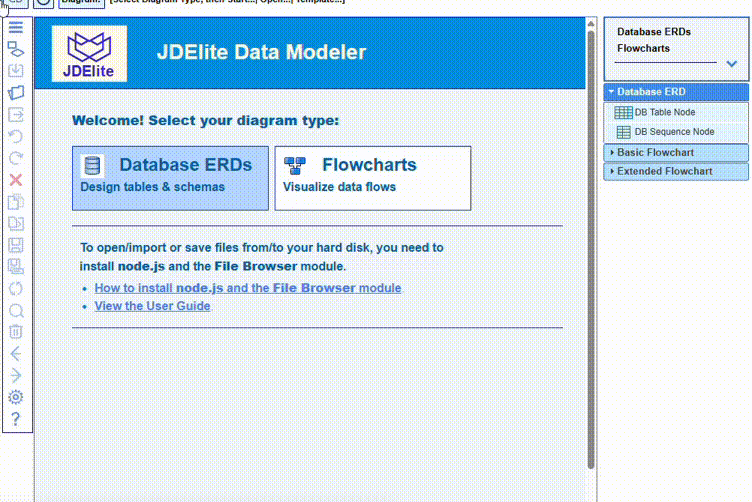
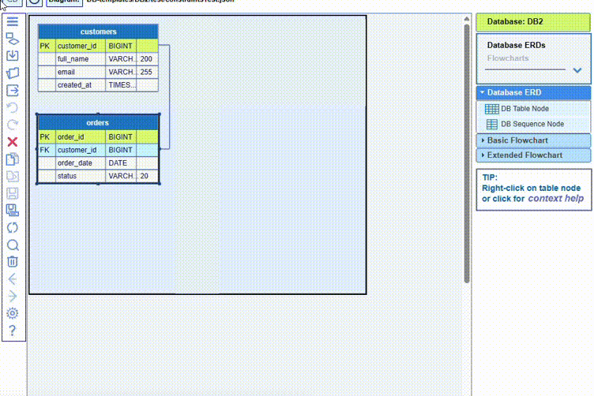

Database constraints specify the rules for data in a table. They can be column-level, referring to a given column, or table-level, referring to multiple columns. Constraints are used to limit the type of data that can be included in a table. This ensures the accuracy and reliability of the data in the table. If there is any violation between a constraint and the action on the data, the action is aborted.
Here are examples of some of the most common database SQL constraints:
NOTE: The JDElite Data Modeler uses unified graphical presentations for PRIMARY KEY, FOREIGN KEY, UNIQUE and CHECK. They are all interpreted as table level constraints, and in the DB table editor they are represented at table level to add, edit, or remove.
The REFERENCES constraint is represented as FOREIGN KEY and is assigned always at table level.
Here is an example how to assign a FOREIGN KEY constraints for a database table column. You need to double-click the title bar of the table node to assign this constraint by selecting in the editor this table FK field, as well as the source PK table name and column name. When you comfirm this information, together with the FOREIGN KEY constraints, a new graphical link will be created:

There is a two-way synchronization between a created link and a FOREIGN KEY constraint: creating a link by dragging the mouse will also automatically create the corresponding FOREIGN KEY constraint.
